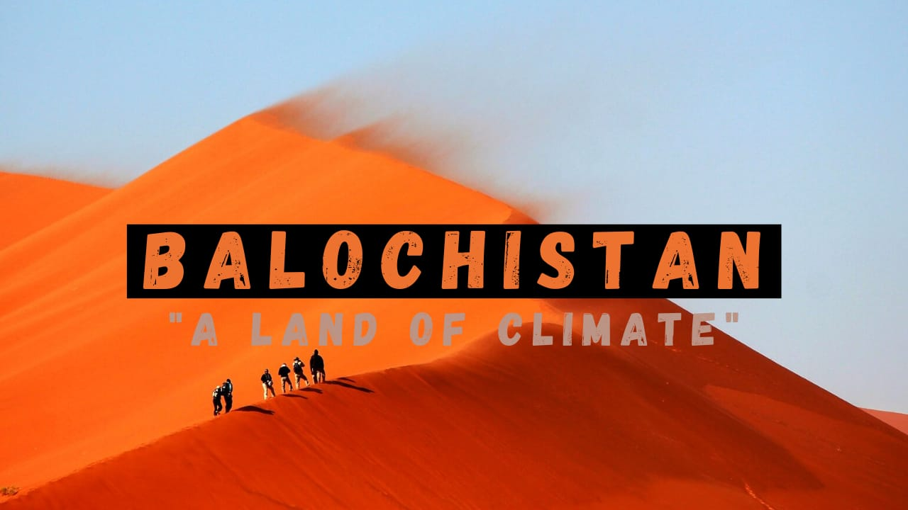

Balochistan
"A LAND OF DRY CLIMATES"

Balochistan is one of the four provinces of Pakistan. It is the largest province in terms of land area, forming the southwestern region of the country, but is the least populated. Its provincial capital and largest city is Quetta.Balochistan shares borders with Punjab and the Khyber Pakhtunkhwa to the northeast, Sindh to the east and southeast, the Arabian Sea to the south, Iran to the west and Afghanistan to the north and northwest.Balochistan is well known of Dry Climates but here we discussed the the most attractive and chilling places of Balochistan.
Pir Ghayb
This is an awe-inspiring view of Pir Ghaib, Balochistan. Locals here believe in the myth of the Invisible Saint (Pir Ghaib), who was saved by the Almighty, after a wicked King's men attacked him. The Saint struck a stick in the mountain from which the water still pours out till date, believe it or not.
Moola Chotok
This tourism deprived sight is known as Moola Chotok in Khuzdar, Balochistan. Amidst stronghold of nationalists in the Jhalawan belt, Chotok seemed like a lost cause at first. Ever since the military operations in Khuzdar division, Chotok has been swiped clean of all dangers and is now open to locals and tourists to go and witness the unfathomable beauty.
Quaid-e-Azam Residency
Father of the nation, Quaid-e-Azam Mohommad Ali Jinnah spent his days of affliction in this wooden cottage in Ziarat, Balochistan. Definitely one of the top tourist attractions of Pakistan. The place holds historic importance and is the perfect place to chill when you're in Ziarat.
The Hannah Jheel
This is how the Hannah Lake looks in winters, frozen, frosted and astounding. This is where people from all over Pakistan go first when they visit Quetta. Only about 18km away from the city, the Hannah Lake serves as the perfect escape for the locals.
Waadi-e-Bolan
Waadi-e-Bolan is a long stretch of a mountain gorge with blue waters running in-between. The place has historical and picturesque importance. It was where the first railway system of Pakistan was established by the British, also the valley that cradles Pir Ghaib and Bibi Naani's
Hingol National Park
Exotic looking mountains, rare and exotic animals including the Markhor and several others of the deer family, surrounded by shallow blue waters. What more could one ask for in a tourist attraction of Balochistan?
Kund Malir Beach
The Kund Malir Beach is one of the most exotic beaches and definitely one of the top tourist attractions in Pakistan. In the last couple of years, a lot of people who started traveling to Kund Malir and companies from Karachi have milked as much money as they could out of it. Still, whatever makes Balochistan a little more unseen helps
Pir Chattal Noorani Gandhawa
An oasis in the middle of nowhere. An astonishing natural habitat amid desert plains with a mythical story to follow. The awe-inspiring oasis caters to thousands of rare fish in the water. Legend has it, that if you catch or eat one of Pir Chattal's fishes, you're bound to either die of poisoning or the fish comes out of your mouth alive in one piece. This myth is a huge tourist attraction of Balochistan.
Astola Island
Astola Island, also known as Jezira Haft Talar Satadip or "Island of the Seven Hills", is a small uninhabited Pakistani island in the Arabian Sea. Also the largest island in Pakistan, it is the epitome of Balochistan's undermined beauty. A great tourist attraction indeed.
Jhal Magsi Desert Rally
Famous for its desert safari and the yearly desert rally, caters huge crowds and sponsors every year. Rally enthusiasts from all over Pakistan round up in one place for stay till the rally ends. The desert like plains of Jhal Magsi offer the best route in Pakistan for people who like to off-road. Definitely one of Pakistan's top attraction